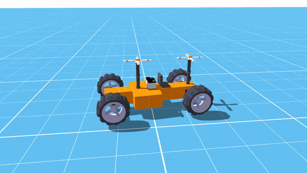

I guess it is not possible to set the center of mass of an object?
I see only a few old threads, one suggesting using a child node to change the pivot point. Is this the best way to do this?
I have a rigid body with multiple collision shapes for each piece (Vehicle building sim). Some pieces, like the engine or parts of the frame, will be heavier than others. I assume I could just calculate the center point based on each piece’s intended mass, and set that up with the parent object node. I could just use constraints for each piece and the individual masses/bodies would work. However, it absolutely destroys framerate, so it makes more sense to have all non-moving connected parts as one rigidbody with collision shapes for each.
Anyone manually setting center of mass in their project? I should mention that because the player builds the vehicle, I cannot set the center of mass in Blender.

Center of Mass for Rigid Body


I would suggest modifying the code in void RigidBody::UpdateMass() to support different child masses or just copying the code and applying it to the btRigidBody and btCompoundShape directly.
Hmm. Might not be simple for scripting then without recompiling I guess
Did you consider calling raw Bullet functions? I’m pretty sure there’s a way on the bullet forums.
If you don’t want to compile anything then it will be difficult. If you’re fine with compiling now and want it to work with script later it should be doable without to much difficulty.
Well compiling actually wouldn’t be the hard part but modifying the engine code. I can give it a shot I guess
Here’s what I’d do:
- Add
float relativeMass_toCollisionShapewith default value of1.fto preserve the current behavior - Modify
RigidBodyto fill the vector in the function I mentioned earlier with those relative masses - Add getters and setters and register the relative mass as an attribute
- Update script bindings
- Pull request
Why don’t you compute centre of mass or at the beginning on scene load and only change when something get destroyed.
http://www.thecartech.com/subjects/auto_eng/Center_of_Gravity.htm
Method 1:
You could use a moment equation to identify pivot point in x and y position.
For example finding x location: Choose any point along the car length take a moment or lever arm calculation.
sum of mx = M.X_CG, then solve for X_CG, M = total mass, m = mass of individual component. x is the location of the components along the initial pivot point. Do the same for y direction.
Method 2:
You could make the other part of the vehicle lighter and just attach a heavier part somewhere you want the cg to be.
So I wasn’t having an issue computing. But actually setting it. There’s no function for that in Urho (at least for 3d). You mean setting it by childing another node to offset it? Or modifying the engine like Nate said?
As far as method 2 I can’t because each part’s mass has to be specific, and so I can’t eyeball anything with center of gravity. I won’t be able to arbitrarily add a heavier part because in the code I have no idea what the user has built. If each piece was it’s own rigidbody then this would be automatic, but that kills framerate, hence why I used multiple collision shapes instead for static parts.
In this screenshot you can see all the base blocks are one rigidbody with multiple collision shapes. The hinge is constrained to it and has a hinge constraint to the top block/seat. The top block and seat are one rigidbody as well. I did a sorting algo to do this automatically otherwise the game quickly becomes unplayable.
Thanks for the link, by the way.
If the user is building the object, then there is no way to fix the cg. But after they construct the vehicle, you can compute the cgx and cgy and then add a heavy block there. You could normalized the weight of everything and make them sum up to 10% portion of the vehicle and add a flat part with 90% of the weight to the cg.
Or do you mean that urho assume the cg of a part is in the center? or does it put the cg point at the object coordinate frame? If Urho put the cg point at the coordinate frame created in blender or other 3d modifier, then let the physic engine handle the cg for you.
Best regards
Wouldn’t the object’s inertia be really messed up with that approach?
As far as I know, urhos cg is the middle of each rigidbody.
What I meant was if a vehicle is made by constraints of multiple rigid bodies together, then the center of mass of the group object will be relatively correct for the game, since each has it’s own mass. So cg is not needed in that case. However, that is not always the case with my game because some pieces are grouped with a single rigid body. This would throw off the center of gravity. I can definitely figure out where it is in the player’s creation. I just need a way to set it.
Blender doesn’t matter here since everything is modular. Each individual piece’s center of gravity is correct alone as their own bodies, just not when they get combined as multiple models to one body.
So you’re suggesting I just put a relatively heavy part in the calculated middle?
I guess I could do that for everything in the game. And the total weight would have to still equal the same as the sum of individual parts. That actually might work really well.
I’m not certain, but I suspect that a compound collision shape is more efficient internally than using a large number of constraints to achieve the same effect.
Yeah it is, dramatically. The difference is 3 fps vs. 130.
It depends, if you retain the mass of the wheels, then rotation inertial should be close.

What is the appropriate way to change the center of mass of a btRigidBody?
The center of mass is the center of the btRigidBody. So if you want to shift the center of mass, you need to shift the collision shapes, and graphics rendering the opposite way. You can use a btCompoundShape to shift the collision child shapes. Also, you need to correct the center of mass graphically. The motion state has some helper functionality to make this easier.
Yes but those aren’t accessible via scripting. Not sure why. Might be over my head to do so but I’ll try what Nate proposed.

Is it opensource? I would like to use it too if possible.
I’ll post the solution snippet here if it works.
Any luck with the fix?
Haven’t tried it yet. Been doing a few other things first. I’ll post here as soon as I do, though